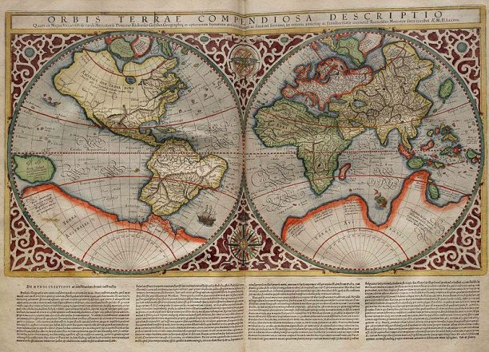

The Age of Discovery, also known as the Age of Exploration, was a period from the late 15th century to the early 17th century characterized by extensive European exploration and maritime expeditions. This era saw European powers, particularly Spain and Portugal, venture beyond their known world to chart new territories, establish maritime routes, and expand their influence globally. Fueled by a quest for new trade routes, wealth, and the spread of Christianity, explorers set sail across uncharted oceans, leading to the discovery and colonization of previously unknown lands. This period profoundly reshaped the global map and initiated a series of interactions—both cooperative and contentious—between Europe and other parts of the world.
One of the most iconic figures of the Age of Discovery is Christopher Columbus, whose voyages across the Atlantic Ocean in 1492 marked a pivotal moment in world history. Commissioned by the Spanish monarchs Ferdinand and Isabella, Columbus set out with the intent of finding a westward route to Asia but instead landed in the Caribbean, encountering the Americas. Columbus's expeditions are often credited with opening up the New World to European exploration and colonization. His voyages led to the establishment of European settlements in the Americas, beginning a period of extensive and often exploitative interaction between Europe and the indigenous peoples of the New World. This momentous event not only altered the course of history but also laid the groundwork for the transatlantic exchange of goods, ideas, and cultures, known as the Columbian Exchange.
Learning about the Age of Discovery is crucial for understanding the development of the modern world. This period marked a significant shift in global history as European explorers ventured beyond their known boundaries, leading to the discovery of new lands and the establishment of overseas colonies. The Age of Discovery was a catalyst for the interconnected world we live in today, shaping the course of international trade, cultural exchanges, and geopolitical dynamics. By studying this era, we gain insight into how early interactions between different civilizations set the stage for the globalized world, revealing the origins of contemporary global trade networks, cultural exchanges, and international relations. Understanding these foundational developments helps us appreciate the historical context of current global issues and international relations.
The Age of Discovery fundamentally transformed global economic systems. The establishment of new trade routes and the discovery of vast resources in the Americas, Africa, and Asia reshaped global trade patterns and economic structures. European powers such as Spain and Portugal, and later England, France, and the Netherlands, expanded their influence through the establishment of colonies and trade monopolies. These economic changes led to the rise of European colonial empires, significantly impacting global trade and economics. By learning about this period, we can better understand the origins of modern economic systems, including the development of capitalist economies and the global trade networks that dominate today’s world. This historical perspective provides valuable insights into the economic foundations of contemporary international trade and the historical roots of economic inequalities.
The Age of Discovery had profound cultural and social impacts, both on European societies and on the indigenous populations of the newly encountered lands. The period saw the exchange of goods, ideas, and technologies between Europe and other parts of the world, known as the Columbian Exchange, which included the transfer of crops, livestock, and cultural practices. However, it also led to significant disruptions and conflicts, including the exploitation and colonization of indigenous peoples, which had long-lasting effects on their societies and cultures. Studying this era provides a deeper understanding of how cultural exchanges and encounters shaped societies on both sides of the Atlantic. It also highlights the complex legacies of exploration, including the spread of European influence and the impact of colonialism on indigenous cultures. This awareness is crucial for understanding historical narratives and their implications for contemporary issues related to cultural heritage and social justice.
The early exploration phase of the Age of Discovery, which spanned from the late 15th century, was characterized by the pioneering voyages of European navigators seeking new trade routes and territories. Initiated by the Portuguese and Spanish crowns, this period saw significant breakthroughs in navigation and maritime technology. Notable explorers like Henry the Navigator of Portugal played a crucial role in establishing the groundwork for further exploration. His initiatives led to the development of improved navigational tools and methods, which facilitated long-distance sea voyages. This era included landmark expeditions such as those undertaken by Christopher Columbus, who, under the Spanish flag, sailed across the Atlantic in 1492 and encountered the Americas. His voyages marked the beginning of sustained European contact with the New World. Similarly, Vasco da Gama's journey around the Cape of Good Hope to India in 1498 opened up sea routes to Asia, dramatically transforming global trade. This early exploration phase laid the foundation for a new era of global interaction, setting the stage for subsequent waves of exploration and colonization.
The 16th century witnessed the Age of Colonization, an era marked by the aggressive expansion of European powers into newly discovered territories. This period saw the establishment of European colonies across the Americas, Africa, and Asia, driven by the quest for wealth, territorial expansion, and the spread of Christianity. Spain and Portugal were at the forefront, with Spain establishing vast colonies in Central and South America and Portugal focusing on Brazil and parts of Africa and Asia. The Treaty of Tordesillas in 1494, which divided the newly discovered lands between Spain and Portugal, exemplifies the geopolitical strategies employed to manage and claim these territories. The Spanish Conquistadors, such as Hernán Cortés and Francisco Pizarro, played pivotal roles in the conquest of the Aztec and Inca empires, respectively, facilitating the Spanish Empire’s expansion in the Americas. This period was characterized by significant economic and social changes, including the extraction of precious metals, the establishment of plantation economies, and the introduction of European governance systems. The colonization efforts had profound impacts on indigenous populations, leading to cultural exchanges, but also to exploitation and significant demographic changes due to diseases and conflicts.
The 17th century, known as the period of Expansion of Trade and Exploration, marked a shift towards more systematic and economically driven exploration. During this time, European powers, including England, France, and the Netherlands, intensified their efforts to establish trade networks and colonies. The establishment of joint-stock companies, such as the Dutch East India Company and the British East India Company, played a crucial role in financing and organizing these ventures. These companies were instrumental in expanding European influence in Asia and Africa, establishing trading posts, and securing valuable commodities like spices, silk, and tea. The competition between European powers for control over trade routes and colonies led to conflicts and rivalries, influencing international politics and economics. The expansion of trade networks also facilitated the global exchange of goods, ideas, and technologies, contributing to the development of a more interconnected world. This period marked the consolidation of European colonial empires and the establishment of complex global trade systems, which had lasting impacts on international commerce and cultural interactions.
The 18th century saw the decline of the initial phase of exploration and the rise of Enlightenment thinking, which shifted the focus from exploration to scientific inquiry and rationalism. This period, often seen as a transitional phase, was marked by a growing emphasis on the study of geography, natural history, and the impact of colonialism. The Enlightenment thinkers began to critically analyze the effects of European expansion, questioning the ethical implications of colonial practices and the treatment of indigenous peoples. Scientific exploration continued, with figures like James Cook mapping the Pacific Ocean and making significant contributions to the understanding of the natural world. This era also saw the rise of philosophical and political ideas that challenged traditional notions of authority and governance, setting the stage for future developments in global politics and economics. The decline of exploration was accompanied by a more introspective examination of the impacts of European expansion, leading to a more nuanced understanding of the global interactions initiated during the Age of Discovery.
During the Age of Discovery, political motivations played a crucial role in driving European nations to explore and claim new territories. The period was marked by intense national rivalries as European powers sought to expand their influence and secure valuable resources. Portugal and Spain were the initial leaders in exploration, largely driven by the desire to find new trade routes and enhance their geopolitical status. The Treaty of Tordesillas, signed in 1494, was a pivotal political agreement between Spain and Portugal that aimed to divide newly discovered lands outside Europe between them. This treaty, brokered by the Pope, was an effort to resolve disputes and prevent conflict over newly explored territories. The competition for overseas expansion led to the rise of powerful maritime empires, each vying for control of lucrative trade routes and colonies. As exploration continued, countries such as England, France, and the Netherlands also entered the race, establishing their own colonial enterprises and competing for dominance in various regions. This period of intense political maneuvering set the stage for future geopolitical dynamics and laid the groundwork for the modern international system of states.
The Age of Discovery led to the establishment of extensive colonial empires, fundamentally altering the political landscape of the time. European powers established colonies in the Americas, Africa, and Asia, each with its own administrative and governance structures. Spain and Portugal were among the earliest to create expansive empires, with Spain focusing on large territories in the Americas and Portugal establishing colonies in Brazil, Africa, and Asia. The Spanish Crown implemented a system of viceroyalties, such as the Viceroyalty of New Spain and the Viceroyalty of Peru, to govern their vast American territories. Portugal, meanwhile, set up trading posts and colonies along the coasts of Africa and Asia, with notable examples including the Portuguese East India Company and the establishment of the city of Goa as a major trading hub. The British, Dutch, and French also established their own colonial administrations, with the British East India Company and the Dutch East India Company playing significant roles in the administration of their respective colonies. This establishment of colonial empires brought about a new era of European dominance and shaped global political and economic relations.
The Age of Discovery was also marked by a series of diplomatic and military conflicts as European powers competed for control over newly discovered territories. The quest for dominance often led to conflicts both among European states and between European powers and indigenous peoples. The rivalry between Spain and Portugal, exemplified by the competition for control over the Spice Islands in present-day Indonesia, led to both diplomatic negotiations and military confrontations. The Treaty of Zaragoza in 1529 was another significant agreement aimed at resolving disputes between the two powers over territories in the Pacific. Similarly, the British and Dutch engaged in a series of naval conflicts known as the Anglo-Dutch Wars over control of trade routes and colonial possessions. In the Americas, European colonizers frequently clashed with indigenous populations, leading to numerous wars and treaties that had profound impacts on the native peoples and their lands. These conflicts and negotiations shaped the geopolitical boundaries and power dynamics of the era, influencing the course of history and the development of the modern world.
As European powers established colonies, they developed various administrative systems to manage their new territories. The formation of colonial administration systems was essential for maintaining control, extracting resources, and integrating diverse regions into European empires. Spain implemented a complex bureaucracy in its colonies, including the establishment of viceroyalties, audiencias (royal courts), and encomienda systems, which granted settlers the right to extract labor and tribute from indigenous populations. The Portuguese established a network of trading posts and forts, governed by officials known as captains-major, who were responsible for overseeing colonial affairs and trade. The British and Dutch developed their own administrative structures, with the British East India Company creating a highly organized system of governance in its Indian territories, including the appointment of Governors-General and the establishment of a legal system. These administrative systems were crucial for the effective management of vast and diverse colonial holdings and played a significant role in shaping the political and economic development of the colonies.
During the Age of Discovery, European society was characterized by rigid social hierarchies and class structures that significantly influenced the dynamics of exploration and colonization. At the top of this hierarchy were the nobility and wealthy landowners, who held substantial political and economic power. These elites often funded voyages of exploration and expansion, seeking to enhance their wealth and status through colonial ventures. The emerging merchant class also played a crucial role, as wealthy merchants and financiers provided the capital necessary for expeditions and trade. This class benefited directly from the establishment of new trade routes and colonies, amassing considerable fortunes through the exploitation of resources and trade. At the lower end of the social spectrum were peasants and laborers, who were largely excluded from the benefits of exploration and colonization. The societal structure reflected a clear divide between those who controlled the means of exploration and those who worked under their command. This hierarchy was mirrored in the colonial societies that emerged, where European settlers often occupied the top social positions, while indigenous populations and enslaved Africans occupied the lower rungs of the social ladder.
Religion played a central role in the Age of Discovery, influencing both the motivations for exploration and the interactions between Europeans and the peoples they encountered. The spread of Christianity was a primary objective for many explorers and colonizers, who saw their missions as a means of converting indigenous populations and expanding the influence of the Church. This religious zeal was evident in the establishment of missions and religious orders, such as the Jesuits and Franciscans, who were tasked with evangelizing in the newly discovered territories. The role of religion was also evident in the policies and practices of colonial powers, with varying degrees of tolerance and repression depending on the region and the colonial administration. In some cases, religious conflicts and debates arose between different Christian denominations, influencing the political and social dynamics of both Europe and the colonies. The spread of Christianity also led to significant cultural and religious exchanges, as indigenous peoples encountered and sometimes integrated elements of Christian beliefs and practices into their own spiritual traditions.
During the Age of Discovery, the daily life of slaves, particularly in European colonies, was marked by extreme hardship and limited autonomy. Slaves were subjected to grueling labor conditions on plantations, in mines, or in domestic settings. In the Americas, for example, slaves worked long hours under harsh conditions, performing strenuous tasks such as sugar cane cultivation or gold mining. Their living conditions were typically poor, with minimal shelter, inadequate food, and scant medical care. Slaves had few legal rights and were considered property rather than individuals, which meant they faced severe punishment for disobedience or perceived misconduct. Despite the oppressive conditions, slaves formed strong communities, often preserving elements of their African heritage and developing their own cultural practices and social networks. Resistance to their conditions was also a part of their daily lives, whether through overt acts of rebellion or subtle forms of defiance like work slowdowns and escape attempts.
The low-class individuals in Europe during the Age of Discovery often faced a life of economic struggle and limited social mobility. Many were engaged in manual labor, such as farming, artisanal work, or domestic service. Their daily lives were characterized by long working hours and minimal financial security. In rural areas, peasants worked the land, often under the authority of a local lord, and lived in simple, modest homes. In urban settings, laborers and artisans faced crowded and unsanitary living conditions, with limited access to education and healthcare. Despite these hardships, there was a rich community life centered around local markets, religious festivals, and social gatherings. The low class also had opportunities for social mobility through trade or craftsmanship, although these were often limited and highly dependent on economic conditions and personal connections.
The middle class in Europe during the Age of Discovery experienced a more comfortable lifestyle compared to the lower class, with greater access to resources and opportunities for social advancement. Middle-class individuals typically included merchants, skilled artisans, and small landowners. Their daily life involved engaging in trade, managing businesses, or overseeing agricultural operations. They lived in relatively spacious and well-constructed homes, often equipped with better amenities than those of the lower class. Education became more accessible to the middle class, and many were able to invest in their children’s education or engage in intellectual and cultural pursuits. Social gatherings, such as dinners, church events, and community activities, were common. The rise of trade and commerce during the Age of Discovery allowed many in the middle class to accumulate wealth and influence, contributing to a growing sense of social identity and economic power.
The upper class during the Age of Discovery, which included nobility, wealthy landowners, and high-ranking officials, enjoyed a life of considerable privilege and luxury. Their daily lives were marked by an emphasis on leisure, social status, and influence. Upper-class individuals lived in large, opulent homes or estates, with access to extensive landholdings and servants. They engaged in activities such as hunting, attending lavish social events, and participating in political and cultural affairs. Education was a significant aspect of their lives, with private tutors and access to scholarly resources. The upper class wielded considerable power and influence, often involved in the patronage of the arts, exploration, and political decision-making. Their social circles included other elite individuals, and their status was reinforced through elaborate ceremonies, cultural practices, and a lifestyle that highlighted their wealth and authority. Despite their privileged position, they were also subject to the pressures and responsibilities of maintaining their social status and managing their estates or political roles.
During the Age of Discovery, traditional family and gender roles were distinctly defined and influenced by the societal norms and economic structures of the time. In European society, family life was predominantly patriarchal, with men holding primary authority and responsibility over family affairs, economic activities, and public roles. Women, in contrast, were largely confined to domestic roles, managing household duties, child-rearing, and supporting their husbands. The expectations for women varied by class; noblewomen might engage in political or social duties, but their roles were still largely circumscribed by their familial ties and the demands of their social class. The family unit was often extended to include servants and laborers, particularly in wealthier households, reflecting the hierarchical nature of society. For those involved in exploration and colonization, family roles were often disrupted by the demands of travel and settlement. Explorers and traders frequently left their families behind while embarking on long voyages, leading to significant social and emotional strains. The establishment of colonies also altered traditional family structures as Europeans integrated into new environments, often leading to mixed families and complex social dynamics in the colonies.
The Age of Discovery created new economic opportunities and pathways for social mobility, particularly for those involved in exploration and trade. The expansion of maritime trade routes and the establishment of colonies opened up new avenues for wealth accumulation and social advancement. Individuals who were able to secure positions as explorers, traders, or colonial administrators could rise from modest beginnings to positions of significant influence and affluence. For example, the rise of the merchant class in cities like Lisbon, Seville, and Amsterdam was a direct result of the lucrative trade networks established during this period. The potential for wealth and status through colonial ventures also attracted a range of adventurers and entrepreneurs, many of whom sought to capitalize on the opportunities presented by new territories. This dynamic led to a certain degree of social fluidity, as individuals could potentially alter their social standing through economic success in the burgeoning global economy. However, the benefits of this mobility were often unevenly distributed, with many lower-class individuals and indigenous peoples remaining disadvantaged despite the broader economic changes.
The Age of Discovery marked a period of significant advancements in education and intellectual life, driven by the increased interest in exploration, science, and cultural exchange. This era saw the establishment and expansion of educational institutions, including universities and academies, which became centers for the study of geography, astronomy, navigation, and natural sciences. The rise of humanism, which emphasized the study of classical texts and the importance of empirical evidence, played a crucial role in shaping intellectual pursuits. Key figures such as Francis Bacon advocated for the scientific method, promoting a systematic approach to inquiry and experimentation. The period also witnessed the publication of influential works that expanded knowledge about the world, such as the detailed maps and navigational charts created by explorers and cartographers. The dissemination of knowledge was facilitated by the advent of the printing press, which allowed for the widespread distribution of books and scientific treatises. This intellectual flourishing laid the groundwork for subsequent scientific and cultural developments and contributed to the broader Enlightenment movement.
The Age of Discovery facilitated significant cultural exchanges between Europe, Africa, Asia, and the Americas, resulting in a complex process of cultural syncretism. As Europeans established colonies and trade networks, they encountered diverse cultures and traditions, leading to a blending of ideas, practices, and technologies. For example, the introduction of new crops and foods, such as potatoes, tomatoes, and maize from the Americas, had a profound impact on European diets and agriculture. Conversely, European technologies and goods, such as firearms, metal tools, and textiles, were introduced to various regions across the globe. This cultural exchange often led to the creation of hybrid cultures, as indigenous peoples and European settlers adapted and integrated elements from each other’s traditions. In colonial societies, syncretism was also evident in religious practices, where indigenous spiritual beliefs were blended with Christianity, resulting in unique forms of worship and ritual. This cultural interaction enriched societies but also led to complex and sometimes contentious relationships between different cultural groups.
The Age of Discovery had profound and often devastating effects on indigenous populations in the newly encountered territories. European explorers and colonizers encountered a wide variety of indigenous societies, each with its own social, cultural, and political structures. The arrival of Europeans frequently led to significant disruptions and transformations within these societies. In the Americas, for example, the arrival of Spanish conquistadors such as Hernán Cortés and Francisco Pizarro led to the conquest and subjugation of powerful empires like the Aztecs and the Incas. The imposition of European political systems, economic exploitation, and forced labor systems, such as the encomienda system, had devastating impacts on indigenous peoples. Disease also played a critical role in the decline of native populations, as European diseases such as smallpox decimated communities with no prior exposure or immunity. The social fabric of many indigenous societies was irreversibly altered as a result of European colonization, leading to significant loss of cultural heritage and autonomy.
During the Age of Discovery, which spanned roughly from the late 15th century to the early 17th century, science experienced significant advancements driven by the exploration and expansion of European empires. This period saw the integration of new knowledge from across the globe and marked a shift from medieval to modern scientific inquiry. Discoveries made in this era laid foundational principles in various scientific disciplines, such as astronomy, geography, and navigation. Explorers and scientists collaborated, sharing knowledge and refining methodologies, leading to groundbreaking contributions that reshaped the understanding of the natural world.
In the realm of astronomy, Tycho Brahe's contributions stand out prominently. Tycho Brahe, a Danish nobleman and astronomer, is renowned for his meticulous observations of celestial phenomena without the aid of a telescope. His detailed and accurate data on planetary positions were collected using large, precise instruments he designed himself. Brahe's observations challenged existing models of the cosmos and provided crucial evidence that Johannes Kepler would later use to formulate his laws of planetary motion. His work, including the famous "Astronomiae Instauratae Progymnasmata," set the stage for the transition from geocentric to heliocentric theories of the solar system. More about Works of Tycho Brahe
In the field of geography, Gerardus Mercator made a monumental impact with his creation of the Mercator projection. Introduced in 1569, this cylindrical map projection revolutionized navigation by allowing sailors to chart a straight-line course, known as a rhumb line, which was crucial for oceanic voyages. The Mercator projection represented the spherical Earth on a flat surface, preserving angles and shapes but distorting sizes, particularly near the poles. This innovation facilitated more accurate maritime navigation and contributed significantly to the success of explorers during the Age of Discovery, enhancing European expansion across the globe. More about Mercator projection
Navigation saw transformative advancements with explorers like Vasco da Gama, whose sea route to India marked a significant achievement in maritime science. In 1498, Vasco da Gama successfully sailed from Lisbon to Calicut (present-day Kozhikode) on the southwestern coast of India. His voyage demonstrated the viability of an all-water route to Asia, which was essential for trade in spices and other valuable goods. The detailed records of da Gama’s journey, including his use of astronomical tools for navigation, provided valuable insights into ocean currents, wind patterns, and celestial navigation, influencing future explorers and enhancing global trade routes. More about Vasco da Gama's voyage
In medicine, Andreas Vesalius’s work in anatomy brought about a profound change in understanding the human body. His seminal work, "De Humani Corporis Fabrica," published in 1543, was a comprehensive and detailed study of human anatomy based on direct dissection. Vesalius's accurate illustrations and descriptions corrected many misconceptions held by medieval scholars and laid the groundwork for modern anatomy. His insistence on observation and empirical evidence marked a significant shift from reliance on ancient texts and established him as a pivotal figure in the scientific revolution of the Renaissance. More about Andreas Vesalius’s Anatomy
The Age of Discovery, spanning from the late 15th to the early 17th centuries, was a transformative period for philosophy, characterized by the expansion of European thought and the integration of new ideas from diverse cultures. This era witnessed a shift from medieval scholasticism towards early modern philosophical inquiry, driven by the increasing interaction with different cultures and the quest for understanding the natural world. The philosophical developments during this time laid important groundwork for the Enlightenment and shaped modern Western thought, emphasizing empirical evidence, individual experience, and critical analysis.
One of the key philosophical movements of the Age of Discovery was Renaissance Humanism, exemplified by scholars such as Erasmus of Rotterdam. Erasmus, a Dutch philosopher and theologian, championed the study of classical texts and emphasized the importance of humanist education, which focused on the values of the ancient Greeks and Romans. His work, including "In Praise of Folly" (1509), critiqued the corruption within the Church and society while advocating for a return to simple, ethical Christian values and the use of reason in religious and moral matters. Erasmus’s ideas significantly influenced the intellectual climate of the period and set the stage for critical reform and the questioning of traditional authority.
Francis Bacon, an English philosopher and statesman, played a pivotal role in developing the philosophy of empiricism during the Age of Discovery. Bacon’s work, particularly "Novum Organum" (1620), argued for a new method of scientific inquiry based on observation, experimentation, and inductive reasoning. He criticized the reliance on deductive reasoning from established authorities and emphasized the importance of empirical evidence in understanding nature. Bacon’s approach laid the foundation for the scientific method and influenced subsequent generations of scientists and philosophers, driving the quest for knowledge in a systematic and evidence-based manner.
Martin Luther’s "95 Theses" (1517) also significantly impacted philosophical and theological thought during the Age of Discovery. Luther, a German monk and theologian, challenged the Catholic Church’s practices and doctrines, particularly the sale of indulgences. His critique sparked the Protestant Reformation, leading to a profound shift in religious and philosophical thinking. Luther’s emphasis on faith, individual interpretation of the scriptures, and the rejection of certain Church practices reshaped theological discourse and encouraged critical examination of religious institutions.
The Age of Discovery, stretching from the late 15th to the early 17th centuries, was marked by unprecedented global explorations and discoveries that reshaped the world map and altered the course of history. This era was characterized by European maritime exploration and expansion, driven by a quest for new trade routes, resources, and territories. Navigators, explorers, and cartographers of the period made significant advances in navigation, geography, and cross-cultural encounters, setting the stage for the modern globalized world.
One of the most iconic events of the Age of Discovery was Christopher Columbus’s voyage in 1492, which led to the European awareness of the American continents. Sponsored by the Spanish monarchs Ferdinand and Isabella, Columbus set out to find a westward route to Asia but instead reached the Caribbean. His voyages, though controversial, opened the Americas to European exploration and colonization. Columbus’s expeditions marked the beginning of sustained European interaction with the New World, leading to profound economic, social, and cultural changes across the globe.
Cr.: Britannica
Ferdinand Magellan’s expedition, which began in 1519, was another monumental achievement in the Age of Discovery. Magellan, a Portuguese explorer sailing under the Spanish flag, led the first expedition to circumnavigate the globe. Although Magellan himself was killed in the Philippines, his fleet continued under the command of Juan Sebastián Elcano and completed the journey in 1522. This voyage demonstrated the vastness of the Earth, provided crucial information about the global geography, and highlighted the interconnectedness of the world’s oceans and continents.
Cr.: Wikipedia
During the Age of Discovery, cartography also saw significant advancements. Gerardus Mercator, a Flemish geographer and cartographer, created the famous Mercator projection map in 1569. This projection allowed sailors to plot straight-line courses, making it easier to navigate long oceanic voyages. Mercator’s work was revolutionary for its time, as it provided a more accurate representation of the world’s geography and greatly influenced subsequent map-making and navigation techniques.

Cr.: History Today
One of the most significant lessons from the Age of Discovery is the importance of global connectivity and interdependence. The era marked the beginning of sustained contact between previously isolated continents, fundamentally transforming global trade, communication, and cultural exchange. For instance, the establishment of sea routes by explorers like Vasco da Gama and Ferdinand Magellan not only connected Europe with Asia but also facilitated the exchange of goods, ideas, and technologies across vast distances. This interconnectedness led to the creation of a global economy, underscoring the lesson that nations and peoples are intricately linked in ways that impact economic, social, and political spheres. In today’s world, understanding and managing this global interdependence is crucial for addressing international challenges such as trade conflicts, climate change, and pandemics.
The Age of Discovery was a period of remarkable technological and navigational innovation. The development of new maritime technologies, such as the compass, astrolabe, and improved ship designs, played a crucial role in enabling explorers to venture further than ever before. For example, the invention of the caravel, a ship with a lateen sail that allowed for greater maneuverability and speed, was instrumental in the success of explorers like Christopher Columbus. These advancements in technology not only made exploration possible but also laid the groundwork for future innovations. The lesson here is that technological progress can drive exploration and expansion, pushing the boundaries of human capability and opening new frontiers. Today, fostering innovation remains essential for addressing complex global issues and driving progress in various fields.
The Age of Discovery was characterized by extensive cultural exchanges between Europe, Africa, Asia, and the Americas. While this led to the sharing of knowledge, art, and technologies, it also resulted in significant cultural conflicts and the disruption of indigenous societies. The Columbian Exchange, which saw the transfer of crops, animals, and diseases between the Old and New Worlds, is a prime example of the profound impacts of cross-cultural interactions. This historical period teaches us that cultural exchange, while often beneficial, can also have complex and sometimes negative consequences. Understanding these dynamics is crucial for promoting respectful and equitable intercultural interactions in our globalized world, where cultural sensitivity and awareness are key to fostering positive relationships and avoiding the pitfalls of cultural imperialism.
The Age of Discovery also highlights the darker aspects of exploration, including economic exploitation and the ethical dilemmas associated with colonization. European powers often exploited the resources and labor of newly discovered lands, leading to the enslavement and mistreatment of indigenous populations. The transatlantic slave trade, which began during this period, is a stark example of how economic motives can lead to severe human rights abuses. This lesson underscores the importance of ethical considerations in economic activities and policies. In the modern context, it serves as a reminder to prioritize human rights, sustainability, and fairness in global economic practices, ensuring that progress does not come at the expense of marginalized communities.
The Age of Discovery significantly altered global geopolitical dynamics, shifting the balance of power among European nations and reshaping international relations. The establishment of colonial empires and trade routes gave rise to new global powers, such as Spain and Portugal, which expanded their influence and competed for dominance. This period teaches us about the impact of exploration on geopolitical structures and the ways in which power dynamics can shift in response to new discoveries and strategic interests. Understanding these historical shifts can provide valuable insights into contemporary geopolitical conflicts and power plays, helping to navigate current international relations and anticipate future changes in the global order.
During the Age of Discovery, a handful of explorers played pivotal roles in mapping out new territories and expanding European influence across the globe. Christopher Columbus, sponsored by Spain, embarked on his famous voyage in 1492, leading to the European awareness of the American continents. Though he never realized he had discovered a new continent, his voyages opened the floodgates for further exploration and colonization of the Americas. Similarly, Vasco da Gama’s voyage to India in 1498 established a sea route linking Europe to Asia, fundamentally altering global trade patterns. His successful navigation around the Cape of Good Hope enabled direct maritime trade between Europe and India, reshaping the economic landscape of both continents. These key figures exemplify the era's exploratory zeal and its transformative impact on global history.
The Columbian Exchange refers to the widespread transfer of plants, animals, foods, human populations, and diseases between the New and Old Worlds following Christopher Columbus’s voyages. This exchange had profound and lasting impacts on both sides of the Atlantic. For example, the introduction of New World crops such as potatoes, maize, and tomatoes had significant effects on European diets and agriculture, leading to population growth and agricultural diversification in Europe. Conversely, Old World diseases like smallpox devastated indigenous populations in the Americas, leading to dramatic demographic shifts. The Columbian Exchange underscores the profound ways in which exploration reshaped global ecological and societal landscapes, creating a new era of cross-cultural interaction and exchange.
The Age of Discovery was marked by significant technological advancements that facilitated long-distance exploration. One of the most critical innovations was the development of the caravel, a ship designed by the Portuguese that featured a combination of lateen and square sails, making it highly maneuverable and capable of sailing into the wind. This technological breakthrough allowed explorers like Ferdinand Magellan and Bartolomeu Dias to navigate uncharted waters more effectively. Additionally, the use of navigational instruments such as the astrolabe and the compass became widespread, enabling more precise navigation and mapping of previously unknown regions. These innovations were instrumental in the success of maritime expeditions and set the stage for future technological advancements in navigation and exploration.
The arrival of European explorers in the Americas had a profound and often devastating impact on indigenous populations. The conquest and colonization efforts led to widespread displacement, exploitation, and decimation of native cultures. For instance, the Aztec and Inca empires, two of the most advanced civilizations in the Americas, were overthrown by Spanish conquistadors like Hernán Cortés and Francisco Pizarro. The imposition of European systems of governance, economy, and religion often led to the erosion of indigenous traditions and societal structures. The forced labor systems, such as the encomienda, further exploited and oppressed native populations. This fact highlights the often overlooked consequences of exploration and colonization on indigenous peoples and the long-term effects of these encounters on their cultures and societies.
The Treaty of Tordesillas, signed in 1494, was a significant diplomatic agreement between Spain and Portugal aimed at resolving disputes over newly discovered lands. The treaty established an imaginary line in the Atlantic Ocean, with Spain receiving rights to lands west of the line and Portugal to lands east of it. This division was intended to prevent conflicts between the two maritime powers over their respective spheres of influence and to regulate their colonization efforts. The treaty had a profound impact on the colonial maps of the world, influencing the distribution of territories and shaping the geopolitical landscape of the Age of Discovery. It exemplifies the efforts by European powers to manage their colonial ambitions and territorial claims during this transformative period in global history.
1. How did the Hubble Deep Field observation in 1995 change our understanding of the universe?
2. Describe one contribution of ancient Babylonians to early astronomy.
3. Explain the impact of the Islamic Golden Age on the development of astronomy during the medieval period.
4. How did the heliocentric model proposed by Copernicus revolutionize our understanding of the solar system?
5. What are some of the key research areas in contemporary astronomy, and why are they significant?